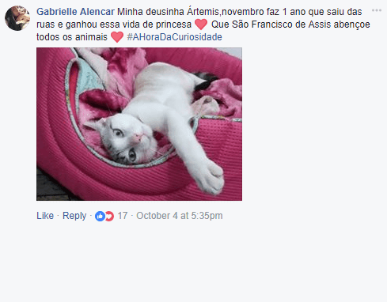
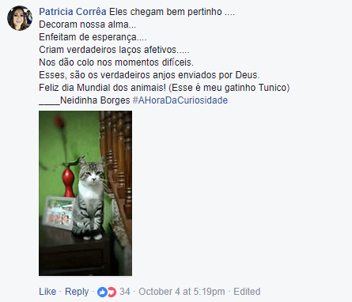
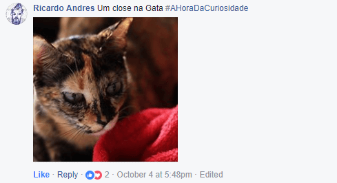
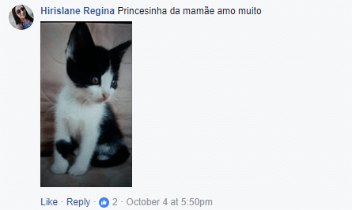

Dia 4 de Outubro é o Dia Mundial dos Animais. Uma data celebrada em mais de 35 países.
Neste dia, inúmeras pessoas postam fotos dos seus amados bichanos. Mas a Whiskas decidiu preparar algo ainda mais especial para eles.
O desafio foi desenvolver algo incrivelmente especial para os gatos durante esse dia, com orçamento zero. Então desenvolvemos uma simples, porém, ambiciosa ideia.
No Dia Mundial dos Animais, os gatos teriam 1 hora exclusiva só para eles, assim poderiam comemorar sua curiosidade no ambiente em que são mais amados. A internet.
Nós convidamos as pessoas do mundo todo, onde a marca é presente, para postarem as fotos dos seus gatos entre 17h e 18h do dia 4 de Outubro.
Para alcançarmos este objetivo, desenvolvemos uma série de posts para fazer o convite e lembrar as pessoas o horário correto que deveriam postar as fotos dos seus bichanos.
Resultado
Milhares de fotos de gatos foram postadas durante a Hora da Curiosidade. Milhares de pessoas participaram do evento. E claro, muitos gatos se sentiram mais especiais e amados durante a hora deles.
- 
- 
- 
- 